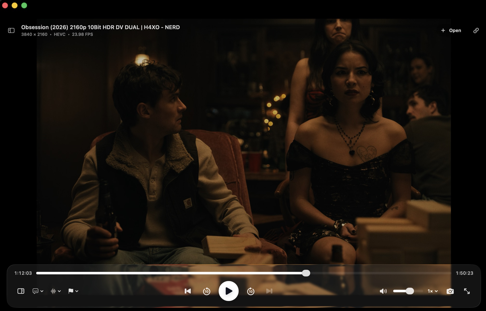

Native & fast
A real Mac app written in SwiftUI, with mpv's copy-back hardware decoding doing the heavy lifting.
macmpv wraps a fully hardware-accelerated mpv engine in a clean, native SwiftUI interface. It plays everything, streams torrents, and gets out of the way.
macOS 26 or newer · Apple Silicon · All releases

And nothing it shouldn't.
A real Mac app written in SwiftUI, with mpv's copy-back hardware decoding doing the heavy lifting.
Any format FFmpeg supports — MP4, MKV, WebM, FLAC and dozens more — plus HTTP, HTTPS, RTMP and RTSP streams.
Drop in a magnet link or .torrent file and watch while it downloads — streamed to the player over localhost.
Drag and drop, reorder, repeat one or all, and jump between episodes with next/previous.
Size, outline, color, background and sync delay — all adjustable. They even move out of the way of the controls on their own.
Per-file resume positions and saved intro/outro markers, so binge sessions remember everything.
Full-screen playback, screenshots, speed control and scrubbing — all with the keyboard commands you already know.
mpv, the FFmpeg libraries and ffprobe are bundled in the app — no Homebrew, no extra installs.
Free, open source, and yours to keep.
Grab the latest release — about 29 MB.
Open the dmg and drop macmpv into your Applications folder.
The first launch asks macOS for permission — see the note below. Then just play.
The + Torrents build plays magnet links with zero setup — WebTorrent
is bundled. The standard build is smaller; add torrents later with
npm install -g webtorrent-cli if you ever need them.
No. The app bundles libmpv, the FFmpeg libraries and ffprobe inside the .app — nothing else to install.
Magnet links and .torrent files stream on the fly. The standard download needs WebTorrent CLI (npm install -g webtorrent-cli); the macmpv + Torrents build above bundles it, so torrents work out of the box.
Not from the download — the dmg is built for Apple Silicon. Intel users can build from source on the GitHub repo.
Yes — open source under the Apache 2.0 license. Star the repo if you like it.